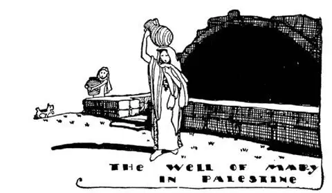
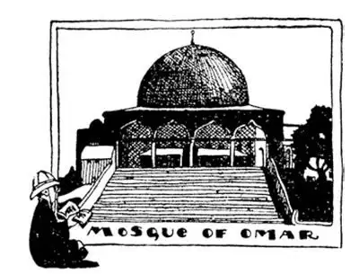
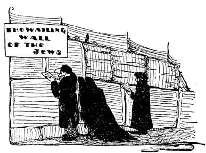

51
The “Exact Spots”
“确切地点”

THERE are three most famous places in Palestine. The first is the place where Christ was born, the second is the place where Christ lived, and the third is the place where Christ died.
Christ was born in Bethlehem, which is a dirty little village, not at all like the heavenly place with angels hovering over it that you see in pictures and on Christmas cards. Christ’s father and mother were traveling and happened to stop in Bethlehem over night when Christ was born. A church was built over the place where Christ was supposed to have been born, and a silver star is in the floor to mark “the exact spot.” The fact is that no one knows “the exact spot,” but we do know that the church over the supposed spot is the oldest church in the World.
Though Christ was born in Bethlehem, He spent most of His early life in another town in Palestine called Nazareth, for Nazareth was His home town and there His father, Joseph, lived and worked. Joseph was a carpenter, and in Nazareth guides point out Joseph’s carpenter shop, the work-bench where Christ worked with the saw and hammer and other tools He used. They also point out the kitchen where Christ’s mother, Mary, cooked the meals for the family. But just as we cannot believe what the guides tell us about the “exact spot” in Bethlehem, so we cannot believe what they tell us about most of the “exact spots” in Nazareth. There is, however, one exact spot which we can believe. That is a well where they say Mary went to get water, and this may actually be the same well, for there never has been any other place in Nazareth where one could get water. There was no such thing as running water in each house.

The women of Nazareth still draw water from this well to-day
今天拿撒勒的妇女们仍然从这口井打水
The last most important place in Palestine is the city where Christ died—Jerusalem. Christians call it their Holy City. But, strangely enough, the Mohammedans call it their Holy City too, and it was once the capital of the Jews. Mohammed lived about six hundred years later than Christ, and Mohammedans believe some of the same things about Mohammed that Christians believe about Christ. Mohammed was supposed to have died in Jerusalem and to have ascended into Heaven from there. The Moslems captured Jerusalem and kept hold of it for more than a thousand years. During that long time the Christians have tried time and again to get Jerusalem away from the Moslems. Time and time again the Christians from all over Europe formed armies and marched on Jerusalem, trying to take it away from the Moslems, but they were usually beaten; and though they have held the city for a time, the Moslems have always recaptured it, until at last in World War I the English captured Jerusalem.
Jerusalem has probably been destroyed and built up again more times than any other city in the World. King David built Jerusalem about a thousand years before Christ was born. Then Solomon built his magnificent temple there, but not very long afterward Jerusalem was captured and destroyed. Every once in a while Jerusalem has been captured and destroyed and then built up again, so that they say there are really eight Jerusalems, one on top of the remains of the other. That is one reason why it is impossible to know “the exact spots” where so many things mentioned in the Bible took place.

Underneath the dome is a huge rock on which oxen used to be sacrificed
圆顶下面是一块巨大的用作牛祭的岩石
Men say they have found in Jerusalem the tomb of Adam, the first man. They have also found the tomb of Christ—His sepulcher—and right near Christ’s tomb they have found in the rock a hole which they say is where the cross was put when Christ was crucified. Over these places they have built a church, called the Church of the Holy Sepulcher. There is one thing, however, that they could not put under this Church of the Holy Sepulcher—that is, the place from which Christ ascended into Heaven, for that spot is on a hill just outside of Jerusalem, called the Mount of Olives.
The Moslems say Mohammed ascended into Heaven too, and not very far from the Church of the Holy Sepulcher is the place. Over this place the Moslems have built a building called the Mosque of Omar, though it really is not a mosque at all and was not built by Omar. It is much more beautiful than the Church of the Holy Sepulcher, however, and, indeed, some even say it is one of the most beautiful buildings in the World. It is built over the spot where the wonderful temple of Solomon stood. It is made of beautiful marble and tile and has a bowl-shaped dome.
Underneath the Mosque of Omar is a huge rock on which oxen used to be sacrificed. On this same rock Abraham, so they say, was about to kill his son as he was ordered to do by the Lord, who wanted to test him, when an angel sent by the Lord stopped his hand. From this same rock Mohammed ascended to Heaven—so they say. The stone tried to follow him, but the archangel Gabriel held it back; and finger prints of archangels are shown you to prove the story true.

犹太人的哭墙
Part of the Temple of Solomon is still standing. It is a piece of the foundation wall. Ever since the temple was destroyed Jews have gone there to weep and to pray that their country, which the ancient Romans took from them, would be restored to them. It is called the Wailing Wall. Jews lived in many countries but there was no Jewish country that they could call their own. After World War II, however, the United Nations voted to divide Palestine into two parts. One part, they said, should be for Jews and would be the country that Jews for two thousand years had prayed to have. The other part, the United Nations said, should be for the many Arab Mohammedans who lived in Palestine. So at last the Jews had a country of their own. They named it Israel. Israel is the part of Palestine on the east next to the Mediterranean Sea. The western part of Palestine became part of the Arab country of Jordan. Jerusalem, which is the holy city for both Mohammedans and Jews, was divided also. The western and newer part of Jerusalem belongs to Israel and the eastern and older part belongs to the Mohammedans.
Israel is a republic. Though some of the oldest cities in the World are in Israel, the Jews made one of the newest cities in the World the capital of the new country, the city of Tel Aviv. Tel Aviv has modern buildings and wide straight streets and it is very clean and neat, much different from the old cities with their narrow, dirty streets. Many Jews from other countries have gone to live in Israel. They are welcome there, for Israel is the home land of the Jews.
【中文阅读】
在巴勒斯坦，有三个最有名的地方。第一个是耶稣出生的地方，第二个是耶稣生活的地方，第三是耶稣去世的地方。
耶稣出生在伯利恒，那是一个又小又脏的村庄，完全不像我们在图画或圣诞卡片中看到的那种情景：天堂般的样子，还有天使在空中飞来飞去。耶稣的父母外出旅行，途中在伯利恒过夜，就在那天晚上，耶稣出生了。人们在据说是耶稣出生的地方修建了一座教堂，地板上现在有一颗银制的星星标明“耶稣出生的确切地点”。事实上，没有人知道哪里是“确切地点”，但有一点我们可以肯定，那个建在所谓“耶稣出生地”的教堂是世界上最古老的教堂。
耶稣虽然出生在伯利恒，但是他童年的大部分时光是在巴勒斯坦的另一个城镇度过的。这个城镇名叫拿撒勒，因为拿撒勒是耶稣的家乡，是他父亲约瑟生活和工作的地方。约瑟是一个木匠，所以，在拿撒勒，导游会给旅游者指出约瑟的木匠店，还有一个工作台，那是耶稣拿着锯子、锤子以及其他工具干活的地方。导游还会指出耶稣母亲玛莉亚为全家烧饭的厨房。但是，在拿撒勒，导游所说的那些“确切地点”，大多数我们都不全相信，就像在伯利恒我们不相信导游说的“确切地点”一样。然而有一处“确切地点”，我们可以相信，那是一口井，据说那就是玛莉亚打水的井，而这很可能真是那井，因为在拿撒勒没有其他地方可以打到水。那时每户人家里也没有自来水这样的东西。
巴勒斯坦最后一个最重要的地方是耶稣去世的城市——耶路撒冷，基督徒称它为自己的“圣城”，但奇怪的是，伊斯兰教徒也称它为自己的“圣城”，而且它曾经是犹太人的首都。穆罕默德生活在耶稣诞生后大约600年的时候，而且伊斯兰教徒相信关于穆罕默德的事情和基督徒相信耶稣的事情是相同的。伊 斯兰教徒认为穆罕默德在耶路撒冷去世，然后从那里升入天堂。穆斯林攻占了耶路撒冷，控制耶路撒冷长达一千多年。在那么漫长的时间里，基督徒试图一次又一次从穆斯林手中把耶路撒冷夺回来。来自欧洲各地的基督徒组成了军队，向耶路撒冷进军，企图夺回耶路撒冷，但是通常都被穆斯林打败。尽管他们也曾一度占领耶路撒冷，但穆斯林总是又把耶路撒冷夺回来。一直到第一次世界大战的时候，英国人占领了耶路撒冷。
耶路撒冷不断被摧毁又不断被重建的次数，超过了世界上任何一座城市。在耶稣出生前约1000年，大卫王建造了耶路撒冷，后来所罗门王将他壮观的圣殿修在耶路撒冷，但是不久以后，耶路撒冷就被别人占领、摧毁了。每隔一段时间，耶路撒冷就被占领、摧毁，又重建，所以人们说，实际上有八个耶路撒冷，每一个都建立在前一个的废墟之上。之所以说不可能知道《圣经》中那么多故事发生的“确切地点”，以上所说就是一个原因。
据说人们在耶路撒冷找到了亚当——世界上第一个男人——的墓，他们还找到了耶稣的墓——圣墓——而且就在耶稣墓旁边，他们还在岩石上发现了一个孔，人们说这是当年耶稣被钉死时放十字架的地方。他们建造了一所教堂，覆盖住这些地方，叫做“圣墓教堂”。但是，有一样东西，他们不能放在圣墓教堂的下面，那就是——耶稣升入天堂的地方，因为这个地方是在耶路撒冷城外的一座被称为“橄榄山”的小山上。
穆斯林说穆罕默德也升入了天堂，地点就在离圣墓教堂不远的地方。在这个地点上面，穆斯林建造了一座叫做“奥玛清真寺”的建筑。不过它并不是真正的清真寺，而且也不是奥玛建的。但是这座建筑物比圣墓教堂漂亮多了，其实，有些人甚至说它是世界上最漂亮的建筑物之一。它就建在当年所罗门圣殿所在的地方，用美丽的大理石和花砖建成，有一个碗形的圆顶。
在奥玛清真寺的下面，是一块巨大的岩石。过去人们把牛作为祭品，放在这块岩石上。穆斯林说，就是在这同一块岩石上，亚伯拉罕遵照上帝的要求正要举刀杀子，这时，上帝派来一名天使阻止了他——上帝是在考验亚伯拉罕。穆斯林还说，就是在这同一块岩石上，穆罕默德升上了天堂，岩石想要跟随穆罕默德一起升上天堂，但是天使长加百列阻止了它。现在有人会指给你看天使长的指纹来证实故事的真实性。
所罗门圣殿现在尚存部分遗迹，那是一段残存的基础墙。自从圣殿被摧毁之后，犹太人常来此哭泣并为被古罗马占领的国家会回归他们而祈祷，这段墙被称为“哭墙”。许多国家都有犹太人生活，但是却没有一个国家可以称得上是 犹太人自己的国家。然而，第二次世界大战之后，联合国投票决定将巴勒斯坦分为两个部分。他们说，其中一部分应该属于犹太人，将成为犹太人祈祷了两千年希望拥有的那个国家；另一部分，联合国说，应该属于住在巴勒斯坦的众多阿拉伯伊斯兰教徒。这样，最终，犹太人有了自己的国家，他们把这个国家命名为以色列。以色列是巴勒斯坦西部那片地区，濒临地中海。巴勒斯坦东部那片地区成为阿拉伯国家约旦的一部分。作为伊斯兰教徒和犹太人的圣城，耶路撒冷也被一分为二，西部新城区属于以色列，东部老城区属于伊斯兰教徒。
以色列是一个共和国。尽管世界上一些最古老的城市在以色列，犹太人却让世界上最新的城市之一——特拉维夫城——作为新国家的首都。特拉维夫有很多现代建筑和宽阔笔直的街道，城市干净整齐，与那些街道狭窄肮脏的老城市截然不同。许多犹太人从其他国家到以色列定居，他们在那儿很受欢迎，因为以色列就是犹太人自己的家园。